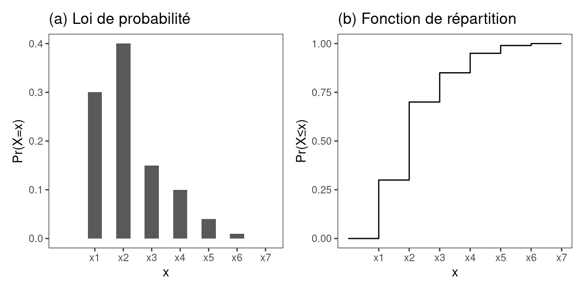
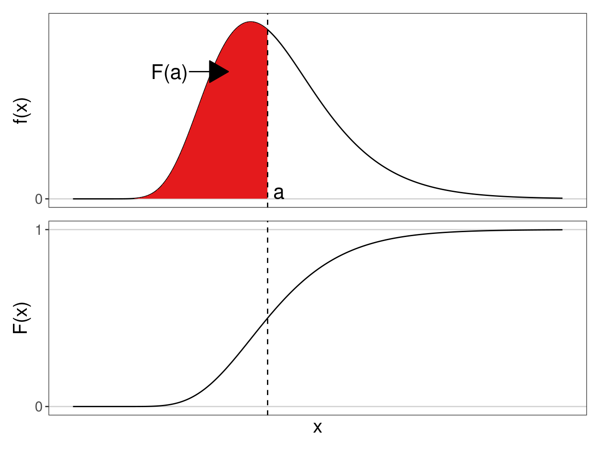
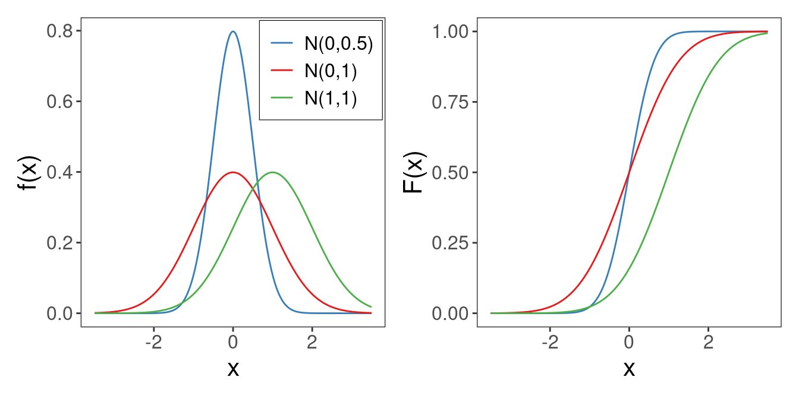
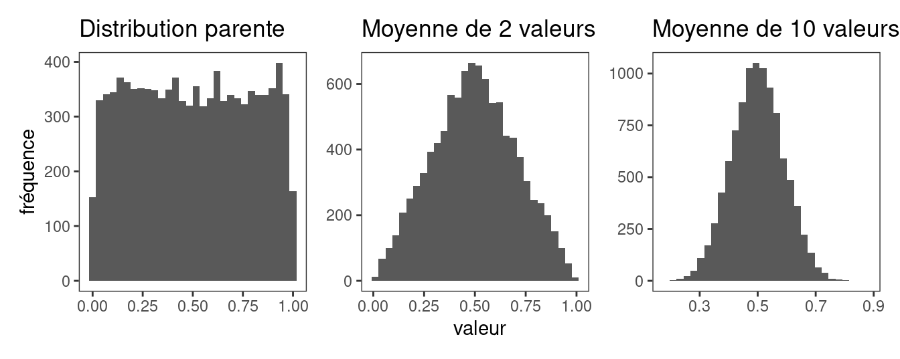
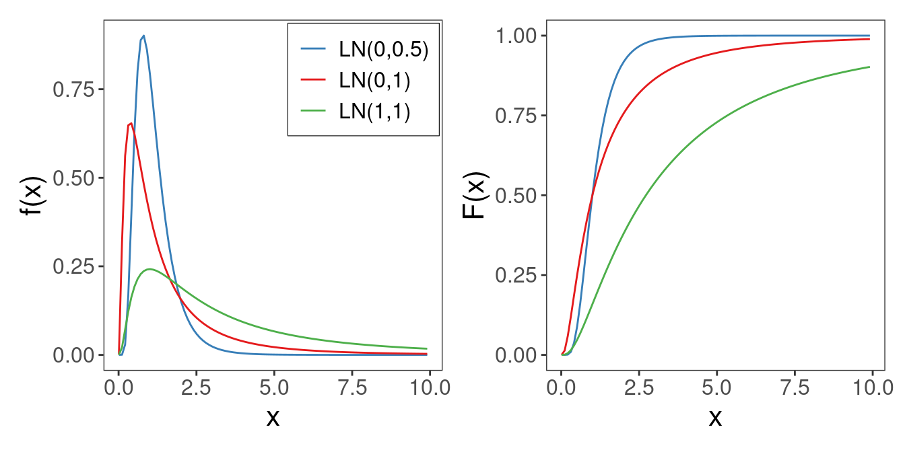
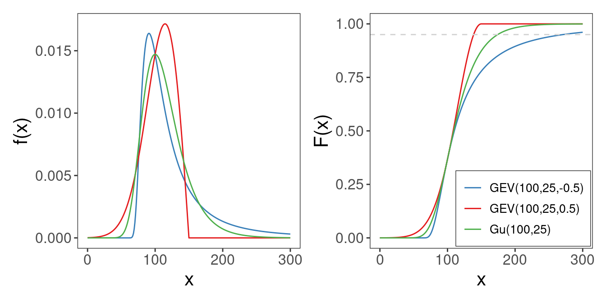
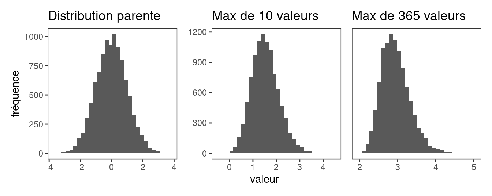
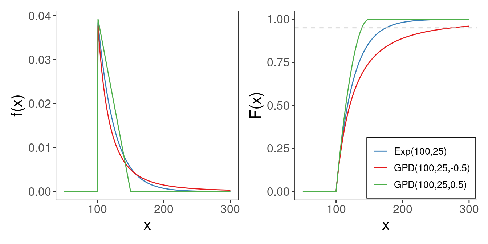
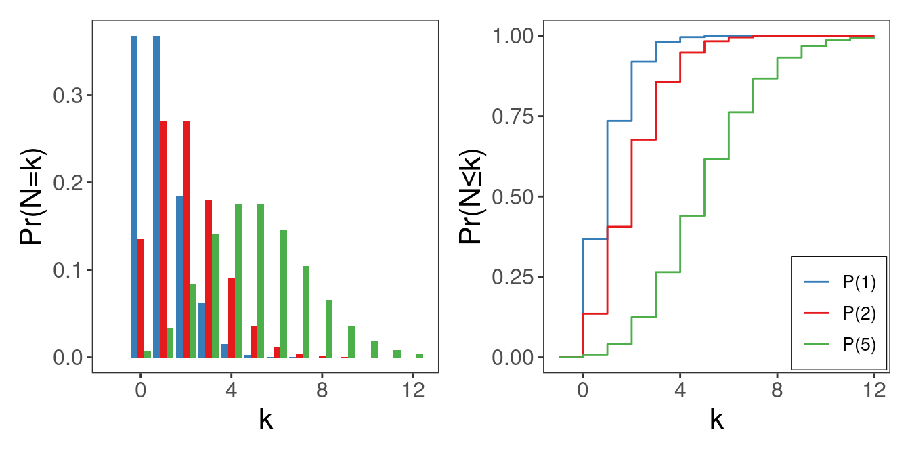

Chapitre 2 Probabilités
Le chapitre précédent a permis de présenter quelques méthodes permettant de décrire une série d’observations et d’en extraire de l’information. Ce chapitre tente d’aller au-delà d’une simple description empirique des données, en utilisant des modèles probabilistes pour décrire la distribution des observations.
La théorie des probabilités fournit un cadre général pour décrire les caractéristiques de variables « génératrices » de données. La puissance de cette théorie tient à sa généralité. En contrepartie, la définition même du terme « probabilité » fait appel à des notions mathématiques trop élaborées pour être présentées dans ce cours si l’on souhaite être totalement rigoureux du point de vue mathématique. Nous nous contenterons donc d’étudier une version « allégée » de la théorie probabiliste, qui sera néanmoins amplement suffisante en pratique.
Cette seconde section est organisée de la manière suivante. Dans un premier temps, les principales motivations conduisant à s’intéresser au cadre probabiliste seront présentées (section 2.1). Les notions de base seront ensuite définies (section 2.2), avant de présenter plus en détail quelques distributions fréquemment utilisées en hydrologie : la loi de Gauss ou loi normale (section 2.3), la loi log-normale (section 2.4), et les lois de valeurs extrêmes (sections 2.5-2.6). Un résumé d’autres distributions usuelles est également fourni en Annexe 6.1.
2.1 Motivations
L’aproche descriptive présentée dans le chapitre précédent permettait déjà d’apporter des éléments de réponse aux questions fréquemment posées à l’hydrologue (par exemple, « Quelle valeur de débit a une probabilité 1% d’être dépassée chaque année ? » ; « Quelle est la probabilité de dépassement de la crue de décembre 2003 ? »). On peut alors s’interroger sur l’intérêt de recourir à des concepts mathématiques supplémentaires. Nous expliquons ici pourquoi il n’est pas raisonnable de se contenter de cette approche descriptive.
2.1.1 Quelle formule pour la fréquence au non-dépassement ?
Nous avons déjà mentionné en section 1.2.1 le caractère arbitraire de la formule utilisée pour la fréquence au non-dépassement. Par définition, la fréquence au non-dépassement de la valeur de rang \(i\) est égale à \(i/n\), où \(n\) est le nombre d’observations. Ceci correspond à la définition suivante : « La fréquence au non-dépassement d’une valeur donnée est égale à la fréquence des observations inférieures ou égales à cette valeur ». Mais si l’on remplace « inférieur ou égal » par « inférieur strict », la formule devient alors \((i-1)/n\). En plus de ces deux formules naturelles, la littérature regorge d’autres formules pour le calcul des fréquences au non-dépassement. On peut citer par exemple la formule de Hazen : \((i-0.5)/n\). Cette formule est en quelque sorte « au milieu » des deux formules naturelles \(i/n\) et \((i-1)/n\) (et nous conseillons d’utiliser cette formule par défaut). Mais il en existe de nombreuses autres, par exemple \(i/(n+1)\) (Weibull), \((i-0.31)/(n+0.38)\) (Beard), \((i-0.44)/(n+0.12)\) (Gringorten), etc. Chacune de ces formules résulte de diverses considérations théoriques (non détaillées ici), mais dans tous les cas, il serait donc souhaitable de se donner un cadre méthodologique s’affranchissant de ce choix largement arbitraire.
2.1.2 Interpolation et extrapolation
Les exemples donnés en section 1.2.1 ont permis d’illustrer les limites d’une approche purement empirique pour l’extrapolation. Ainsi, si l’on se basait uniquement sur les fréquences au non-dépassement empiriques (avec la formule \(i/n\)), on conclurait que la plus forte valeur observée ne peut pas être dépassée ! L’utilisation d’une autre formule de fréquence empirique ne résoudrait que partiellement le problème, puisque l’extrapolation au-delà de la valeur la plus forte resterait problématique. Mentionnons également que l’interpolation entre deux fréquences empiriques par de segments de droite n’est guère satisfaisante.
2.1.3 Variabilité d’échantillonnage et incertitudes
La plus forte motivation conduisant à l’utilisation de modèles probabilistes est liée à la variabilité d’échantillonnage. Ce terme générique désigne le fait que les observations de débit dont nous disposons ne constituent généralement qu’un faible échantillon de l’ensemble des réalisations possibles de la rivière. En conséquence, les estimations seront dépendantes des données effectivement observées. Cette variabilité d’échantillonnage peut être illustrée en considérant les 28 maxima annuels représentés en Figure 2.1 (gauche). On constate que deux événements forts ont été observés lors de la première moitié de la période. La figure de droite illustre l’impact de ces deux valeurs sur l’allure des courbes de fréquence cumulée calculées sur deux périodes de 14 ans. Ainsi, si l’hydrologue doit répondre à la question « quel débit de crue a une probabilité au non-dépassement de 0.9 ? », une approche purement empirique conduira à répondre « environ 100 \(m^3.s^{-1}\) » en utilisant les données de la seconde période, mais « environ 250 \(m^3.s^{-1}\) » sur la base de la première !
Précisons que l’utilisation de modèles probabilistes ne permet pas de s’affranchir totalement de cette difficulté : en effet, leur estimation est également soumise à la variabilité d’échantillonnage, mais dans une moindre mesure. De plus, l’approche probabiliste possède l’avantage majeur de permettre la quantification de cette variabilité, et de l’incertitude qui en résulte.

Figure 2.1: Illustration du concept de variabilité d’échantillonnage : valeurs maximales annuelles pour l’Azergues à Lozanne sur 2 périodes de 14 ans (gauche), et courbes des fréquences cumulées correspondantes (droite).
2.2 Théorie des probabilités
Cette section présente les concepts issus de la théorie des probabilités qui sont utiles à l’hydrologue.
2.2.1 Probabilité
En termes intuitifs, une probabilité est un instrument de mesure du hasard : elle évalue le caractère probable (ou improbable) d’événements que l’on peut (ou que l’on choisit) de considérer comme aléatoires.
Une probabilité varie entre 0 et 1 : plus la probabilité est proche de 1, plus l’événement a des chances de se produire ; inversement, une probabilité proche de zéro dénote un événement ayant peu de chance de se produire. Un événement impossible a une probabilité nulle, un événement certain a une probabilité égale à 1.
La notion de probabilité peut également être formalisée de façon plus mathématique. Une probabilité sur un ensemble \(\Omega\) est une fonction \(\Pr:\wp(\Omega) \mapsto [0;1]\) qui vérifie les trois axiomes suivants :
- \(\Pr(A) \geq 0, \forall A \subset \Omega\)
- \(\Pr(\Omega)=1\)
- Soit \((A_i)\) une suite de sous-ensembles de \(\Omega\) deux à deux disjoints, c’est à dire que \(A_i \cap A_j=\emptyset, \forall i \neq j\). Alors: \[\Pr \left( \bigcup_{i=1}^{+\infty} A_i\right)=\sum_{i=1}^{+\infty} \Pr \left( A_i\right)\]
Dans la définition ci-dessus, \(\Omega\) représente l’ensemble des issues possibles de l’expérience aléatoire, il est appelé univers ou ensemble fondamental. Un sous-ensemble A de \(\Omega\) est appelé un événement. La notation \(\wp(\Omega)\) représente l’ensemble des parties de \(\Omega\), c’est à dire l’ensemble de tous les sous-ensembles possibles de \(\Omega\), ou encore l’ensemble des événements.
Les trois axiomes des probabilités conduisent aux propriétés suivantes :
- \(\Pr(A)\in [0;1], \forall A \subset \Omega\)
- \(\Pr(\emptyset)=0\)
- \(A \subset B \implies \Pr(A) \leq \Pr(B)\)
- \(\Pr(A^c)=1 - \Pr(A)\)
- \(\Pr(A \cup B)=\Pr(A)+\Pr(B)-\Pr(A \cap B)\)
Remarque 1 : la définition donnée ci-dessus est en fait abusive d’un point de vue strictement mathématique, car il peut exister des sous-ensembles de \(\Omega\) pour lesquels la probabilité n’est pas définie (sous-ensembles non-mesurables). Il faut alors définir en ensemble d’évènements mesurables, ce qui requiert des outils mathématiques trop sophistiqués pour être évoqués dans ce cours.
Remarque 2 : Un événement impossible a une probabilité nulle, un événement certain a une probabilité égale à 1. La réciproque n’est cependant pas vrai du point de vue mathématique : des événements de probabilité nulle ne sont pas nécessairement impossibles, dans le sens où des sous-ensembles non vides de \(\Omega\) peuvent être de probabilité nulle. Par exemple, la probabilité de « tirer au hasard » un nombre entier dans l’ensemble des nombres réels est nulle, bien que l’ensemble des nombres entiers ne soit pas vide.
2.2.2 Variable aléatoire
En termes intuitifs, une variable aléatoire permet de décrire de manière quantitative l’ensemble des résultats possibles d’une expérience aléatoire. Supposons par exemple que nous lancions deux dés, et que nous nous intéressions à la somme des deux faces observées. La variable aléatoire « \(X\) := Somme des deux dés » prend ainsi des valeurs entières comprises entre 2 et 12. Nous nous intéresserons au calcul de probabilité d’événements du type « la somme des deux dés vaut 4 » (noté \(\Pr(X = 4)\)) ou « la somme des deux dés est strictement inférieure à 6 » (noté \(\Pr(X < 6)\)).
D’un point de vue plus hydrologique, une variable aléatoire \(X\) représentera tout simplement la variable que nous souhaitons étudier, par exemple « Nombre de crues observées en une année » ou « débit maximum annuel » (cf. exemples dans le chapitre précédent). Il est par contre important de bien faire la différence entre la variable aléatoire \(X\) et les observations \((x_1,\ldots,x_n)\) : la variable aléatoire \(X\) est un objet mathématique abstrait, que l’on considère comme le « générateur » des données observées \((x_1,\ldots,x_n)\). On dit d’ailleurs que \((x_1,\ldots,x_n)\) sont des réalisations de la variable aléatoire \(X\). Les notations utilisées dans ce document utilisent des lettres capitales pour les variables aléatoires, des lettres minuscules pour leurs réalisations.
En termes plus mathématiques, une variable aléatoire réelle est une fonction définie sur l’univers \(\Omega\) et à valeurs réelles, \(X:\Omega \mapsto(-\infty;+\infty)\). Dans l’exemple des dés utilisé ci-dessus, l’ensemble \(\Omega\) est égal à l’ensemble des couples \((a, b)\), où \(a\) et \(b\) sont des entiers entre 1 et 6. \(X\) sera la fonction somme :
\[\begin{align} X:(1,\ldots,6) \times (1,\ldots,6) &\mapsto (2,\ldots,12) \\ (a,b) &\mapsto a+b \end{align}\]
Ainsi, l’événement « la somme des deux dés vaut 4 » correspond à l’ensemble des couples \((a, b)\) pour lesquels \(a+b=4\), soit \(X^{-1}(\{4\})=\{(1, 3), (3, 1), (2, 2)\}\). Notons que nous utiliserons l’abus de notation \(X=4\) au lieu de la notation \(X^{-1}(\{4\})\). Dans cet exemple précis, \(X\) ne prend pas ses valeurs dans l’ensemble de tous les nombres réels, mais seulement dans un sous-ensemble de l’ensemble des entiers : il s’agit d’une variable aléatoire discrète.
2.2.3 Distribution d’une variable aléatoire discrète
Soit \(X\) une variable aléatoire discrète, à valeurs dans un ensemble dénombrable ordonné \(\{x_i,i=1,2,\ldots \}\). La loi de probabilité de \(X\) est la donnée des quantités \(f(x_i)=\Pr(X=x_i), \forall i=1,2,\ldots\)
La fonction de répartition de \(X\) est définie par : \(F(x_i)=\Pr(X \leq x_i), \forall i=1,2,\ldots\)
Ces deux fonctions sont illustrées dans la Figure 2.2.

Figure 2.2: Loi de probabilité et fonction de répartition pour une variable aléatoire discrète.
Il existe une analogie entre la loi de probabilité représentée en Figure 2.2 et l’histogramme présenté dans le chapitre précédent, où nous avions reporté les fréquences (en ordonnées) de chaque observation (en abscisses): nous aurons l’occasion de revenir à plusieurs reprises sur cette analogie fréquence / probabilité. L’objectif d’un modèle probabiliste est justement de remplacer les fréquences observées par des probabilités issues du modèle, pour les raisons exposées en section 2.1.
Concernant la fonction de répartition, il est aisé de démontrer la relation suivante : \(F(x_i)=\sum_{k=1}^{i}f(x_i)\). Autrement dit, la fonction de répartition est égale au cumul des probabilités individuelles de chaque valeur possible. On retrouve encore une fois l’analogie avec la courbe des fréquences cumulées : la fonction de répartition calculée en une valeur \(x\) est l’analogue de la fréquence au non-dépassement d’une observation \(x\). En corollaire, \(F\) est une fonction croissante, qui part de \(0\) et tend vers \(1\) en l’infini.
De ces deux définitions découlent quelques grandeurs caractéristiques de la variable aléatoire \(X\) (notez encore une fois l’analogie avec le chapitre précédent !) :
- L’espérance, \(E(X)=\sum_{i=1}^{+\infty}x_i f(x_i)\)
- La variance, \(Var(X)=\sum_{i=1}^{+\infty}(x_i-E(X))^2 f(x_i)\), et l’écart type, \(\sigma(X)=\sqrt{\left( Var(X) \right)}\)
- Le quantile d’ordre \(p\), noté \(x_p\), qui vérifie \(F(x_p)=p\)
- Les moments d’ordre \(k\), \(\mu_k(X)=\sum_{i=1}^{+\infty}x_i^k f(x_i)\). Si \(k=1\), on reconnaît l’espérance.
- Les moments centrés d’ordre \(k\), \(\mu^\prime_k(X)=\sum_{i=1}^{+\infty}(x_i-E(X))^k f(x_i)\). Si \(k=2\), on reconnaît la variance.
Remarque 1 : notez la distinction, en termes de vocabulaire, entre l’espérance (de la variable aléatoire) et la moyenne (des données). Malheureusement, cette distinction explicite s’arrête là et le même mot variance (par exemple) est utilisé à la fois pour la variable aléatoire et pour les données. On utilise donc un adjectif pour marquer cette différence : on parle de variance théorique ou « de la population » pour une variable aléatoire, et de variance empirique, expérimentale ou « de l’échantillon » pour celle calculée sur les données.
Remarque 2 : Etant donné que la fonction de répartition \(F\) est en escalier, le quantile d’ordre \(p\) n’est pas forcément défini (si \(p\) tombe « entre les marches » de l’escalier).
Remarque 3 : Les quantités faisant intervenir des sommes infinies peuvent ne pas exister.
2.2.4 Distribution d’une variable aléatoire continue
Les notions de loi de probabilité et de fonction de répartition décrites précédemment peuvent se généraliser au cas d’une variable continue, avec quelques différences liées au passage du discret au continu. Nous allons commencer cette fois ci par définir la distribution d’une variable aléatoire continue X comme la donnée d’une fonction de répartition \(F\), telle que \(F(x)=\Pr(X \leq x)\). La densité de probabilité de \(X\) sera alors la fonction \(f\) telle que : \(f(x)=\int_{-\infty}^{x}F(u)\text{d} u\). En d’autres termes, la densité \(f\) est la dérivée de la fonction de répartition \(F\) (Figure 2.3).

Figure 2.3: Densité de probabilité (haut) et fonction de répartition (bas) pour une variable aléatoire continue.
Propriété : si \(f\) est continue, alors \(\Pr(a<X \leq b)=\int_{a}^{b} f(x) \text{d}x = F(b)-F(a)\).
Dans le cas continu, on voit ainsi apparaître une analogie entre la probabilité d’un événement et l’aire sous la courbe de la densité. Cette analogie implique en particulier que \(\Pr(X=a)=0, \forall a \in \mathbb{R}\). C’est la raison pour laquelle il n’est pas possible de définir la loi de probabilité directement à partir des probabilités des éléments de \(\Omega\), ce qui conduit à raisonner sur des intervalles. On remarque encore une fois l’analogie avec les histogrammes dans le cas continu du chapitre précédent, où nous étions obligés de procéder à des regroupements en classes.
Une densité de probabilité est nécessairement une fonction positive (ou nulle), dont l’aire totale sous la courbe vaut 1. Par contre, rien n’interdit que certaines valeurs soient supérieures à 1 : en effet, la fonction \(f\) ne représente pas une probabilité, mais une densité (d’où son nom !). La fonction de répartition est quant à elle une fonction croissante entre 0 et 1.
A partir de la densité de probabilité, il est possible de définir les mêmes grandeurs caractéristiques que dans le cas discret, en remplaçant les sommes par des intégrales :
- L’espérance, \(E(X)=\int_{-\infty}^{+\infty}x f(x)\text{d}x\)
- La variance, \(Var(X)=\int_{-\infty}^{+\infty}(x-E(X))^2 f(x)\text{d}x\), et l’écart type, \(\sigma(X)=\sqrt{\left( Var(X) \right)}\)
- Le quantile d’ordre \(p\), noté \(x_p\), qui vérifie \(F(x_p)=p\). De manière équivalente, le quantile d’ordre \(p\) est égal à l’inverse de la fonction de répartition prise en \(p\), \(x_p=F^{-1}(p)\).
- Les moments d’ordre \(k\), \(\mu_k(X)=\int_{-\infty}^{+\infty}x^k f(x)\text{d}x\). Si \(k=1\), on reconnaît l’espérance.
- Les moments centrés d’ordre \(k\), \(\mu^\prime_k(X)=\int_{-\infty}^{+\infty}(x-E(X))^k f(x)\text{d}x\). Si \(k=2\), on reconnaît la variance.
Remarque : Encore une fois, rien ne garantit l’existence des intégrales infinies. De plus, certaines lois ne sont pas définies sur \(\mathbb{R}\) tout entier, ces intégrales doivent alors être réduites aux supports de ces lois.
2.3 Distribution des valeurs « moyennes » : la loi normale
2.3.1 Définition
La loi de Gauss (également appelée loi normale) est centrale en statistiques, puisqu’un grand nombre de phénomènes ont un comportement approximativement Gaussien. De plus, un théorème que nous verrons ultérieurement affirme qu’une moyenne (ou une somme) de variables aléatoires tend (presque) toujours en distribution vers une loi normale. Cette loi dépend de deux paramètres \(\mu\) et \(\sigma\) représentant la moyenne et l’écart-type de la distribution (Figure 2.4). Elle est parfois utilisée en hydrologie pour modéliser des modules annuels.
La loi normale, notée \(\mathcal{N}(\mu,\sigma)\), possède les propriétés suivantes :
\[\begin{align} &f(x)=\frac{1}{\sqrt{2\pi}\sigma}\exp \left( -\frac{(x-\mu)^2}{2\sigma^2}\right) \\ &F(x)=\int_{-\infty}^{x}f(u)\text{d}u \text{ (pas d'expression analytique)}\\ &\sigma >0 \\ &E(X)=\mu\\ &Var(X)=\sigma^2 \tag{2.1} \end{align}\]

Figure 2.4: Exemples de densités (gauche) et de fonctions de répartition (droite) pour la loi normale.
2.3.2 Justification théorique
Le rôle important joué par la loi de Gauss en statistiques appliquées peut s’expliquer par le théorème central limite. Ce théorème peut s’exprimer de la manière suivante. Soit \((X_1,\ldots,X_n)\) des variables aléatoires indépendantes et de même distribution (on notera iid pour indépendantes et identiquement distribuées), d’espérance \(\mu\) et d’écart-type \(\sigma\). Alors, quelle que soit la distribution des \(X_i\) (pourvu qu’espérance et variance existent), la distribution de la statistique « moyenne empirique » \(\bar{X}=\frac{1}{n}\sum_{i=1}^n X_i\) tend vers une loi Gaussienne quand \(n\) augmente. En pratique, une trentaine d’observations (indépendantes) est souvent jugée suffisante pour appliquer l’approximation Gaussienne. Ce résultat très général implique que la distribution gaussienne est un choix naturel pour décrire des variables qui peuvent s’écrire comme la moyenne (ou la somme) d’un grand nombre de valeurs.
La Figure 2.5 illustre le théorème central limite. Le panneau de gauche montre l’histogramme de 10 000 valeurs simulées dans une loi uniforme : sa forme est très différente de celui d’une loi gaussienne. On s’intéresse à présent à la moyenne de 2 valeurs tirées dans une loi uniforme. Le panneau du milieu montre l’histogramme correspondant, et indique que déjà l’histogramme prend une forme en cloche qui se rapproche un peu plus de celui d’une loi gaussienne. Si l’on refait l’exercice avec la moyenne de 10 valeurs tirées dans une loi uniforme, l’histogramme ressemble très fortement à celui d’une loi gaussienne.

Figure 2.5: Illustration du théorème central limite.
2.4 Distribution log-normale
La distribution log-normale, également appelée loi de Galton, est une distribution dérivée de la loi normale de la manière suivante : la loi log-normale de paramètres \(\mu\) et \(\sigma\) est la distribution de la variable \(\exp(X)\), où \(X\) suit une loi normale de paramètres \(\mu\) et \(\sigma\). Inversement, le logarithme népérien d’une variable suivant une loi log-normale suit une loi normale. De par sa définition, une variable suivant une loi log-normale est strictement positive. Cette distribution est utilisée en hydrologie notamment pour modéliser des variables d’étiage ou parfois des modules annuels.
La loi log-normale, notée \(\mathcal{LN}(\mu,\sigma)\), possède les propriétés suivantes :
\[\begin{align} &f(x)=\frac{1}{x\sqrt{2\pi}\sigma}\exp \left( -\frac{(\log(x)-\mu)^2}{2\sigma^2}\right) \text{ si } x > 0 \text{ (0 sinon)} \\ &F(x)=\int_{-\infty}^{x}f(u)\text{d}u \text{ (pas d'expression analytique)}\\ &x>0, \sigma >0 \\ &E(X)=\exp(\mu+\sigma^2/2)\\ &Var(X)=[\exp(\sigma^2)-1]\exp(2\mu+\sigma^2) \tag{2.2} \end{align}\]

Figure 2.6: Exemples de densités (gauche) et de fonctions de répartition (droite) pour la loi log-normale.
2.5 Distributions des valeurs extrêmes : maxima
Les distributions des valeurs extrêmes jouent un rôle central en hydrologie, notamment pour l’estimation des crues. Inversement, l’hydrologie a été une des motivations premières au développement d’une théorie des valeurs extrêmes, puisque les travaux précurseurs d’Emil Julius Gumbel avaient pour ambition de fournir un cadre théorique aux problèmes d’estimation des crues. Cette section focalise sur les distributions utilisées pour modéliser les maxima annuels (méthode d’échantillonnages MAXAN, section 1.1.3). Une autre section sera consacrée à l’étude des dépassements de seuil (méthode d’échantillonnage SUPSEUIL).
2.5.1 Définitions
La loi de Gumbel, notée \(Gu(\mu,\lambda)\), est la première loi des valeurs extrêmes à avoir été utilisée pour l’étude des maxima annuels. Il s’agit d’une loi à deux paramètres, le paramètre de position \(\mu\) et le paramètre d’échelle \(\lambda\). Ce dernier paramètre est également appelé le gradex en hydrologie francophone. La loi de Gumbel possède les propriétés suivantes :
\[\begin{align} &f(x)=\frac{1}{\lambda}\exp \left( -\frac{x-\mu}{\lambda} -\exp \left( -\frac{x-\mu}{\lambda} \right) \right) \\ &F(x)=\exp \left( - \exp \left( -\frac{x-\mu}{\lambda} \right) \right)\\ &\lambda >0 \\ &E(X)=\mu + \gamma \lambda, \gamma \approx 0.5772 \text{ (constante d'Euler-Mascheroni)}\\ &Var(X)=\frac{\pi^2}{6}\lambda^2 \tag{2.3} \end{align}\]
La loi généralisée des valeurs extrêmes, notée \(GEV(\mu,\lambda,\xi)\), généralise la loi de Gumbel en lui ajoutant un troisième paramètre appelé le paramètre de forme. Elle possède les propriétés suivantes :
\[\begin{align} &\text{Soit } z=1-\frac{\xi(x-\mu)}{\lambda} \\ &f(x)= \frac{1}{\lambda} z^{\frac{1}{\xi}-1} \exp \left( - z^{\frac{1}{\xi}}\right) \text{ si } z > 0 \text{ (0 sinon)}\\ &F(x)=\exp \left( - z^{\frac{1}{\xi}}\right) \text{ si } z > 0 \\ &z>0,\lambda >0,\xi \neq 0 \\ &E(X)=\mu + \frac{\lambda}{\xi} \left( 1-\Gamma(\xi+1)\right) \text{ (existe seulement si } \xi> -1 \text{)}\\ &Var(X)= \left(\frac{\lambda}{\xi}\right)^2 \left( \Gamma(2\xi+1)-\Gamma^2(\xi+1)\right) \text{ (existe seulement si } \xi> -\frac{1}{2} \text{)} \tag{2.4} \end{align}\]
La Figure 2.7 présente les densités et fonctions de répartitions de trois lois GEV, qui possèdent les mêmes paramètres de position et d’échelle mais diffèrent par leur paramètre de forme \(\xi\). Si \(\xi<0\), la loi GEV est dite « de type Fréchet » : il s’agit d’une distribution bornée à gauche (i.e. elle possède une borne inférieure), que l’on qualifie de « distribution à queue lourde » pour signifier que la densité chute lentement vers zéro en l’infini. Si \(\xi>0\), la loi GEV est dite « de type Weibull » : elle est bornée à droite (i.e. elle possède une borne supérieure). Enfin, lorsque \(\xi\) tend vers zéro, la densité de la loi GEV tend vers la densité d’une loi de Gumbel. On pourra donc considérer que la loi de Gumbel est un cas particulier de la loi GEV, obtenu en prenant un paramètre de forme nul. Notons qu’il s’agit là d’un léger abus de langage, car les formules de l’équation (2.4) ci-dessus ne sont pas définies pour \(\xi=0\).

Figure 2.7: Exemples de densités (gauche) et de fonctions de répartition (droite) pour la loi GEV.
Le paramètre de forme joue un rôle majeur dans l’estimation de quantiles de crues, car il gouverne leur comportement asymptotique. A titre d’illustration, la ligne horizontale en Figure 2.7 (droite) correspond à la probabilité 0.95. L’intersection avec les fonctions de répartition donne donc la valeur du quantile d’ordre 0.95 : suivant la valeur du paramètre de forme, ce quantile varie entre environ 140 (pour \(\xi=0.5\)), environ 175 (pour \(\xi=0\)), et jusqu’à plus de 250 (pour \(\xi=-0.5\)).
2.5.2 Justification théorique
De même que le rôle central de la loi normale pour les valeurs « moyennes » est dû à l’existence d’un théorème central limite, la loi GEV trouve sa justification dans un théorème limite appelé le théorème des valeurs extrêmes.
Le théorème des valeurs extrêmes est, en quelque sorte, l’équivalent du théorème central limite, mais où la statistique « moyenne empirique » \(\bar{X}_n=\frac{1}{n} \sum_{i=1}^{n}X_i\) est remplacée par la statistique « maximum » \(M_n=\max(X_1,\ldots,X_n)\). La formulation exacte du théorème est un peu délicate, nous le retiendrons donc sous la forme suivante : si la distribution de \(M_n\) converge, alors c’est forcément vers une loi généralisée des valeurs extrêmes \(GEV(\mu,\lambda,\xi)\). Ce résultat est vrai quelle que soit la loi parente dont est issu l’échantillon \((X_1,\ldots,X_n)\) : ce théorème justifie donc l’utilisation de la loi GEV pour décrire le comportement probabiliste des maxima annuels.
La Figure 2.8 permet d’illustrer cette convergence dans le cas d’une loi parente normale \(\mathcal{N}(0,1)\). Cette figure a été obtenue de manière analogue à la Figure 2.5. Le panneau de gauche montre l’histogramme de valeurs simulées dans la loi parente. Dans le panneau du milieu, on s’intéresse au maximum de 10 valeurs tirées dans la loi parente: l’histogramme correspondant indique que la distribution de ce maximum est asymétrique et n’est donc plus gaussienne. Si l’on refait l’exercice avec le maximum de 365 valeurs tirées dans la loi parente, on obtient un histogramme encore plus asymétrique et on peut montrer qu’il s’agit dans ce cas d’une distribution de Gumbel. Si l’on change de distribution parente, la distribution du maximum convergera toujours vers une loi GEV, mais par forcément avec un paramètre de forme nul (correspondant à une loi de Gumbel). Par exemple, une loi parente uniforme conduira à une loi GEV à paramètre de forme positif pour le maximum (distribution bornée à droite), tandis qu’une une loi parente de Student conduira à une loi GEV à paramètre de forme négatif (distribution à queue lourde).

Figure 2.8: Illustration du théorème des valeurs extrêmes.
2.6 Distributions des valeurs extrêmes : dépassements de seuil
De même que la loi GEV et son cas particulier, la loi de Gumbel, sont des candidats naturels pour modéliser les maxima annuels, nous verrons dans cette section qu’il existe des distributions naturelles pour modéliser les dépassements de seuils obtenus par la méthode d’échantillonnage SUPSEUIL : la loi de Pareto généralisée, et son cas particulier la loi exponentielle.
2.6.1 Définitions
La loi exponentielle, notée \(Exp(x_0,\lambda)\), est une distribution à deux paramètres : le seuil \(x_0\), et le paramètre d’échelle \(\lambda\) (également appelé gradex en hydrologie francophone).
\[\begin{align} &f(x)=\frac{1}{\lambda}\exp \left( -\frac{x-x_0}{\lambda} \right) \text{ si } x \geq x_0 \text{ (0 sinon)} \\ &F(x)=1-\exp \left( -\frac{x-x_0}{\lambda} \right) \text{ si } x \geq x_0 \text{ (0 sinon)} \\ &x \geq x_0,\lambda >0 \\ &E(X)=x_0 + \lambda \\ &Var(X)=\lambda^2 \tag{2.5} \end{align}\]
La loi de Pareto généralisée, notée \(GPD(x_0,\lambda,\xi)\), généralise la loi exponentielle en lui ajoutant un troisième paramètre appelé le paramètre de forme. Elle possède les propriétés suivantes :
\[\begin{align} &\text{Soit } z=1-\frac{\xi(x-x_0)}{\lambda} \\ &f(x)= \frac{1}{\lambda} z^{\frac{1}{\xi}-1} \text{ si } x \geq x_0 \text{ et } z > 0 \text{ (0 sinon)}\\ &F(x)=1 - z^{\frac{1}{\xi}} \text{ si } x \geq x_0 \text{ et } z > 0 \\ &x \geq x_0, z>0,\lambda >0,\xi \neq 0 \\ &E(X)=x_0 + \frac{\lambda}{1+\xi} \text{ (existe seulement si } \xi> -1 \text{)}\\ &Var(X)= \frac{\lambda^2}{(1+\xi)^2(1+2\xi)} \text{ (existe seulement si } \xi> -\frac{1}{2} \text{)} \tag{2.6} \end{align}\]
La Figure 2.9 présent les densités et fonctions de répartition pour trois lois GPD. Le rôle du paramètre de forme est similaire à ce que l’on observait pour la loi GEV (section 2.5) : lorsque \(\xi<0\), la loi GPD est bornée à gauche par le seuil et possède une queue lourde à droite. Lorsque \(\xi>0\), la loi GPD est bornée à gauche et à droite. Enfin, lorsque \(\xi\) tend vers zéro, la densité de la loi GPD tend vers la densité d’une loi exponentielle, ce qui conduit à considérer la loi exponentielle comme un cas particulier de la loi GPD, obtenu en prenant un paramètre de forme nul.

Figure 2.9: Exemples de densités (gauche) et de fonctions de répartition (droite) pour la loi GPD.
Par rapport à l’échantillonnage par la méthode MAXAN, l’échantillonnage SUPSEUIL présente l’avantage intéressant de pouvoir s’intéresser au processus d’occurrence des crues. Ainsi, si l’on considère la Figure ??), il est possible de dénombrer le nombre annuel d’événements de crue. Cette variable, que nous noterons \(N\), est en général modélisée à l’aide d’une loi de Poisson notée \(\mathcal{P}(\tau)\). Le paramètre \(\tau\) de la loi de Poisson est appelé le taux d’occurrence. La loi de Poisson possède les caractéristiques suivantes :
\[\begin{align} &\Pr(N=k)= \exp(-\tau) \frac{\tau^k}{k!}\\ &\Pr(N\leq k)= \exp(-\tau) \sum_{i=0}^{k}\frac{\tau^i}{i!}\\ &k \text{ entier positif}, \tau >0\\ &E(N)=\tau\\ &Var(X)= \tau \tag{2.7} \end{align}\]
La Figure 2.10 illustre la loi de probabilité et la fonction de répartition d’une loi de Poisson.

Figure 2.10: Exemples de lois de probabilté (gauche) et de fonctions de répartition (droite) pour la loi de Poisson
2.6.2 Justification théorique
L’utilisation du couple loi de Poisson + loi GPD pour la modélisation des dépassements de seuil (échantillonnage SUPSEUIL) est justifiée par une relation forte avec l’utilisation de la loi GEV pour les maxima (échantillonnage MAXAN). En effet, il est possible de démontrer que si le processus d’occurrence suit une loi de Poisson \(\mathcal{P}(\tau)\) et le processus de dépassement du seuil une loi \(GPD(x_0,\lambda_{GPD},\xi_{GPD})\) (échantillonnage SUPSEUIL), ces deux variables étant supposées indépendantes, alors le maximum annuel suit une loi \(GEV(\mu,\lambda_{GEV},\xi_{GEV})\) (MAXAN). De plus, les paramètres des distributions sont liés par les relations suivantes :
\[\begin{align} \xi_{GEV} &= \xi_{GPD} \\ \lambda_{GEV} &= \lambda_{GPD} \times \tau^{-\xi}\\ \mu &= x_0 + \frac{\lambda_{GPD}(1-\tau^{-\xi})}{\xi} \tag{2.8} \end{align}\]